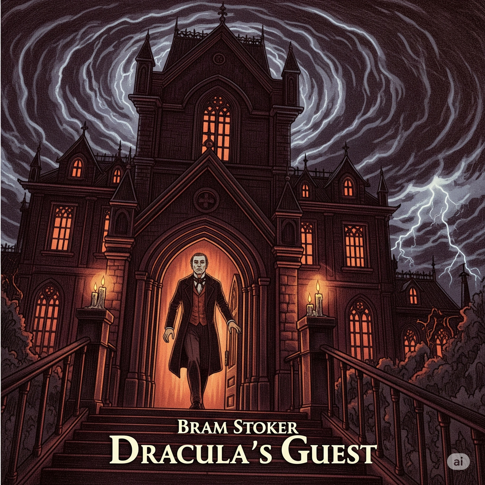

Este relato introduce al lector en una atmósfera gótica densa y amenazante. El protagonista, un joven inglés que se presume podría ser Jonathan Harker, se encuentra en Múnich y decide hacer una excursión a las afueras de la ciudad pese a las advertencias del cochero y del dueño del hotel. La fecha es la noche de Walpurgis, tradicionalmente asociada con fuerzas oscuras y celebraciones de origen pagano. Desoyendo las recomendaciones, el joven se adentra en un bosque helado y termina en un antiguo cementerio abandonado. En este lugar, todo comienza a volverse más siniestro. Se encuentra con un monumento fúnebre misterioso y siente una presencia extraña. Una tormenta de nieve lo atrapa y, en medio del frío y la oscuridad, presencia fenómenos inexplicables, entre ellos la aparición de una figura femenina pálida y fantasmal dentro de una tumba, y el ataque de un enorme lobo blanco. Finalmente, es rescatado por un grupo de soldados enviados por un personaje misterioso, quien se insinúa que es el conde Drácula. El joven queda convaleciente, sin comprender del todo lo ocurrido. El relato, cargado de símbolos, presagios y elementos sobrenaturales, funciona como una introducción al universo oscuro y tenebroso de Drácula.
